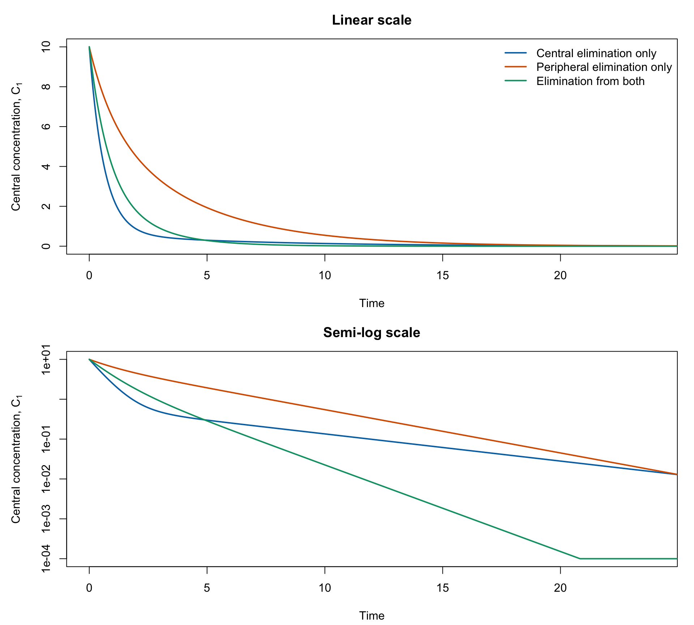
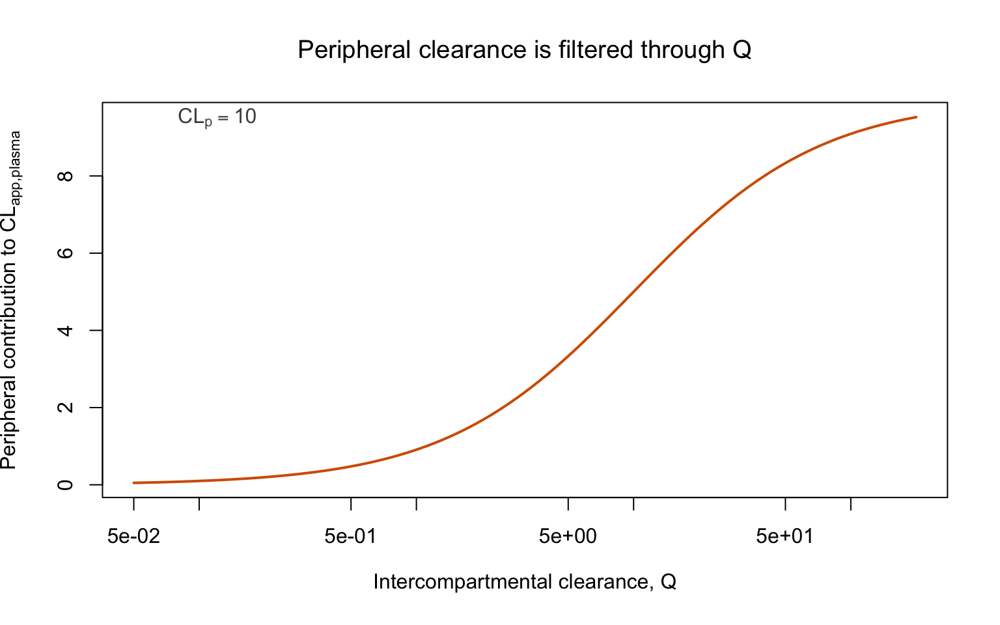

library(mrgsolve)
code <- '
$PARAM V1 = 10, V2 = 20, Q = 5, CLc = 0, CLp = 0
$CMT CENT PERI
$ODE
dxdt_CENT = -(CLc/V1 + Q/V1)*CENT + (Q/V2)*PERI;
dxdt_PERI = (Q/V1)*CENT - (Q/V2 + CLp/V2)*PERI;
$TABLE
double CP = CENT/V1;
$CAPTURE CP
'
mod <- mcode("peripheral_clearance", code)
dose <- 100
# A fine grid and a long horizon make trapezoidal AUC essentially complete.
sim_one <- function(CLc, CLp, Q = 5, end = 120, delta = 0.01) {
out <- mrgsim(
mod,
events = ev(amt = dose, cmt = 1),
end = end,
delta = delta,
recsort = 3,
param = list(CLc = CLc, CLp = CLp, Q = Q)
)
out <- as.data.frame(out)
auc <- sum(diff(out$time) * (head(out$CP, -1) + tail(out$CP, -1)) / 2)
data.frame(time = out$time, CP = out$CP, AUC_numeric = auc)
}
scenarios <- data.frame(
scenario = c("Central elimination only", "Peripheral elimination only", "Elimination from both"),
CLc = c(10, 0, 5),
CLp = c(0, 10, 10)
)
simulations <- lapply(seq_len(nrow(scenarios)), function(i) {
x <- sim_one(scenarios$CLc[i], scenarios$CLp[i])
x$scenario <- scenarios$scenario[i]
x
})
names(simulations) <- scenarios$scenarioThe familiar intravenous (IV) pharmacokinetic identity is
\[ \mathrm{AUC}_{\mathrm{plasma}} = \frac{\mathrm{Dose}}{CL}. \]
It is easy to remember, but it also hides an assumption: the clearance is defined with respect to the plasma (central-compartment) concentration. What happens if drug is eliminated from a peripheral compartment instead? And what does plasma AUC mean when elimination occurs from both compartments?
This post uses a deliberately simple linear two-compartment model to make that assumption visible. This is a mathematical teaching example, not a proposed physiologic model for a particular drug.
Model diagram
The model
Let \(V_1\) and \(V_2\) be central and peripheral volumes, \(Q\) the intercompartmental clearance, \(CL_c\) clearance from the central compartment, and \(CL_p\) clearance from the peripheral compartment. The model is
\[ \begin{aligned} \frac{dA_1}{dt} &= -\left(\frac{CL_c}{V_1} + \frac{Q}{V_1}\right)A_1 + \frac{Q}{V_2}A_2, \\ \frac{dA_2}{dt} &= \frac{Q}{V_1}A_1 - \left(\frac{Q}{V_2} + \frac{CL_p}{V_2}\right)A_2, \end{aligned} \]
where plasma concentration is \(C_1=A_1/V_1\). An IV bolus dose enters \(A_1\). Here, \(CL_c C_1\) and \(CL_p C_2\) are elimination rates; in particular, \(CL_p\) is not automatically a clearance referenced to plasma concentration.
A result before simulating
For a complete concentration-time profile, integrate the amount balances from time zero to infinity. Let \(AUC_1=\int_0^\infty C_1(t)dt\) and \(AUC_2=\int_0^\infty C_2(t)dt\). Because the peripheral compartment starts empty and eventually returns to zero amount, its net change in amount is zero:
\[ \underbrace{0}_{A_2(\infty)-A_2(0)} = \underbrace{Q AUC_1}_{\text{distribution into peripheral}} - \underbrace{Q AUC_2}_{\text{distribution back to central}} - \underbrace{CL_p AUC_2}_{\text{peripheral elimination}}. \]
Rearranging gives
\[ Q(AUC_1-AUC_2)=CL_p AUC_2. \]
In words: over the whole profile, the net amount distributed into the peripheral compartment must be exactly the amount eliminated there.
The central compartment starts with the IV dose and also ends at zero. Integrating its amount balance makes the dose term explicit:
\[ \begin{aligned} \underbrace{A_1(\infty)-A_1(0)}_{0-\mathrm{Dose}} &= \int_0^\infty \frac{dA_1}{dt}\,dt \\ &= -CL_c AUC_1 - Q(AUC_1-AUC_2). \end{aligned} \]
Multiplying both sides by \(-1\) gives
\[ \mathrm{Dose}=CL_c AUC_1 + Q(AUC_1-AUC_2). \]
Substituting the peripheral balance into that equation gives the equivalent whole-body statement: every unit of dose was ultimately eliminated either from central or peripheral,
\[ \mathrm{Dose}=CL_c AUC_1+CL_p AUC_2. \]
Finally, solve the peripheral balance first:
\[ AUC_2 = \frac{Q}{Q+CL_p}AUC_1. \]
Substitute this into the whole-body balance and solve for the plasma (central) AUC:
\[ \boxed{AUC_1 = \frac{\mathrm{Dose}} {CL_c+\frac{QCL_p}{Q+CL_p}}}. \]
Thus, the apparent clearance inferred from plasma AUC is
\[ CL_{\mathrm{app,plasma}} = CL_c+\frac{QCL_p}{Q+CL_p}. \]
Peripheral elimination only contributes \(QCL_p/(Q+CL_p)\) to plasma apparent clearance. It is limited by distribution to the peripheral compartment.
For example, if \(Q=5\) and \(CL_p=10\), then \(AUC_2=(5/(5+10))AUC_1=AUC_1/3\). If there is no central elimination and the dose is 100, peripheral elimination requires \(10\times AUC_2=100\); hence \(AUC_2=10\) and \(AUC_1=30\). The larger central AUC reflects the extra time needed for drug to reach the peripheral elimination site.
Simulate the three cases with mrgsolve
Q <- 5
results <- scenarios
results$CL_app_plasma <- with(results, CLc + Q * CLp / (Q + CLp))
results$AUC_analytic <- dose / results$CL_app_plasma
results$AUC_numeric <- vapply(simulations, function(x) x$AUC_numeric[1], numeric(1))
results$relative_error_pct <- 100 *
(results$AUC_numeric - results$AUC_analytic) / results$AUC_analytic
knitr::kable(
transform(
results,
AUC_analytic = round(AUC_analytic, 3),
AUC_numeric = round(AUC_numeric, 3),
relative_error_pct = round(relative_error_pct, 3)
),
col.names = c(
"Scenario", "CL central", "CL peripheral", "Apparent plasma CL",
"Analytic AUC", "Simulated AUC", "Relative error (%)"
),
caption = "Analytic and simulated central AUC after a 100-unit IV bolus."
)| Scenario | CL central | CL peripheral | Apparent plasma CL | Analytic AUC | Simulated AUC | Relative error (%) |
|---|---|---|---|---|---|---|
| Central elimination only | 10 | 0 | 10.000000 | 10 | 10 | 0.001 |
| Peripheral elimination only | 0 | 10 | 3.333333 | 30 | 30 | 0.000 |
| Elimination from both | 5 | 10 | 8.333333 | 12 | 12 | 0.001 |
cols <- c("Central elimination only" = "#0072B2",
"Peripheral elimination only" = "#D55E00",
"Elimination from both" = "#009E73")
old_par <- par(no.readonly = TRUE)
par(mfrow = c(2, 1), mar = c(4.2, 4.8, 2.8, 1.2))
plot(
NA, xlim = c(0, 24), ylim = c(0, dose / 10),
xlab = "Time", ylab = expression("Central concentration, " * C[1]),
main = "Linear scale"
)
for (name in names(simulations)) {
x <- simulations[[name]]
lines(x$time, x$CP, col = cols[name], lwd = 2)
}
legend("topright", legend = names(cols), col = cols, lwd = 2, bty = "n")
plot(
NA, xlim = c(0, 24), ylim = c(1e-4, dose / 10), log = "y",
xlab = "Time", ylab = expression("Central concentration, " * C[1]),
main = "Semi-log scale"
)
for (name in names(simulations)) {
x <- simulations[[name]]
lines(x$time, pmax(x$CP, 1e-4), col = cols[name], lwd = 2)
}
par(old_par)The numerical AUCs agree with the analytic result up to the small error from finite simulation time and trapezoidal integration. The semi-log panel makes the terminal slopes easier to compare: moving the elimination site changes not only plasma AUC, but also the shape of the plasma concentration-time curve. The central-only case returns the usual \(100/10=10\). With peripheral-only elimination, however,
\[ AUC_1 = \frac{\mathrm{Dose}}{CL_p}\left(1+\frac{CL_p}{Q}\right). \]
For this example, \(CL_p=10\) and \(Q=5\), so central AUC is 30 rather than 10. The drug has to distribute to the peripheral compartment before it can be cleared.
Distribution can become the bottleneck
Holding peripheral clearance at \(CL_p=10\), the next simulation changes \(Q\). The contribution of peripheral elimination to apparent plasma clearance cannot exceed \(Q\): when peripheral elimination is very fast, distribution becomes the rate-limiting step.
q_grid <- exp(seq(log(0.05), log(200), length.out = 200))
clp <- 10
cl_app <- q_grid * clp / (q_grid + clp)
plot(
q_grid, cl_app, log = "x", type = "l", lwd = 2, col = "#D55E00",
xlab = expression("Intercompartmental clearance, " * Q),
ylab = expression("Peripheral contribution to " * CL["app,plasma"]),
main = expression("Peripheral clearance is filtered through " * Q)
)
abline(h = clp, lty = 2, col = "grey40")
text(0.07, 9.4, labels = expression(CL[p] == 10), pos = 4, col = "grey30")
Try it yourself: change \(Q\)
In this interactive sensitivity analysis, central clearance is held at \(CL_c=5\) and peripheral clearance at \(CL_p=10\). Drag the slider to change \(Q\). The profile is solved in your browser from the same two-compartment equations used above; no software or data leave your device.
The slider is logarithmic so that both very low and very high Q values are visible.
Q =
Apparent plasma clearance
Central AUC0–∞
Peripheral contribution
Fixed values: dose = 100, V1 = 10, V2 = 20, CLc = 5, and CLp = 10. Units are intentionally generic.
Take-home messages
- The IV identity \(AUC=\mathrm{Dose}/CL\) remains correct only after defining which concentration the clearance is referenced to.
- If clearance is driven by peripheral concentration, plasma AUC is governed by \(QCL_p/(Q+CL_p)\), not simply by \(CL_p\).
- With clearance from both compartments, plasma apparent clearance is \(CL_c+QCL_p/(Q+CL_p)\).
- Calling the sum \(CL_c+CL_p\) “total clearance” can be misleading when the terms are referenced to different compartment concentrations.
These results assume linear, time-invariant kinetics, an IV dose into the central compartment, and AUC extrapolated to infinity. Real models may include nonlinear elimination, additional compartments, tissue-specific binding, or more physiologic blood-flow structure; the same principle still applies: always state the concentration that defines a clearance parameter.